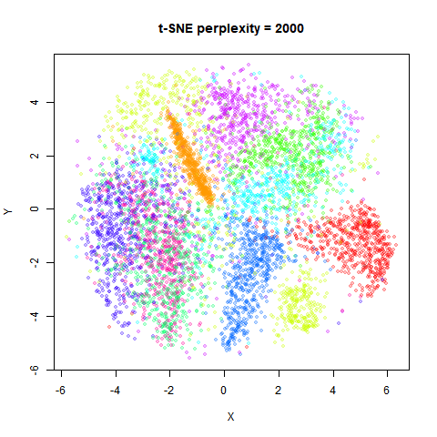
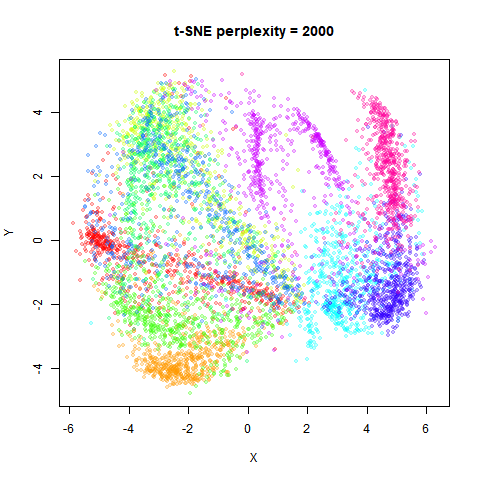
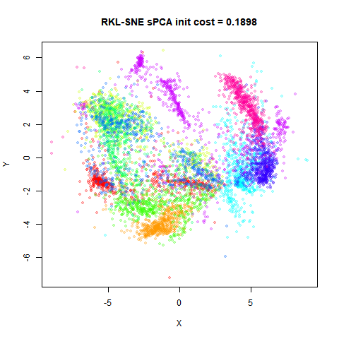
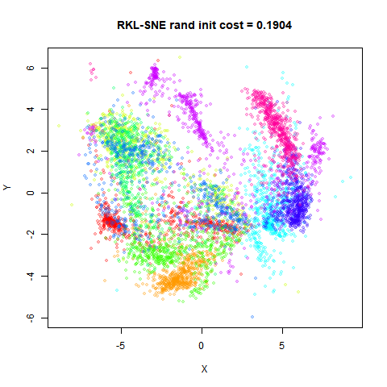
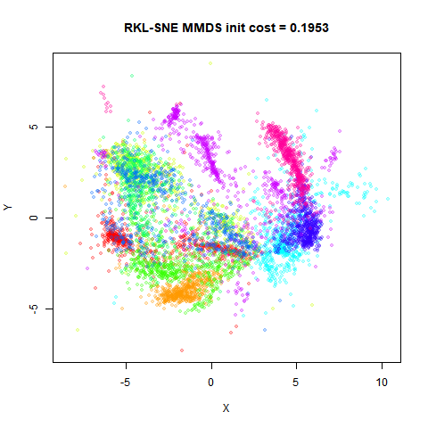

This article retains its original experiments and examples. For current package usage, see the usage guide.
Im, Verma and Branson investigated replacing the Kullback Leibler divergence in t-SNE with other f-divergences, with Theano code on github, collectively referred to as ft-SNE). The basic t-SNE code seems to be a fork of the thesne code base created to implement dynamic t-SNE (pdf) (a technique for embedding time series data).
The new divergences considered are:
- The “reverse” KL divergence, similar to that considered as part of the NeRV method.
- The Jensen-Shannon divergence, similar to that considered in JSE.
- The chi-squared divergence.
- The Hellinger distance divergence.
Although we’ve look at something similar for some of these divergences when we implementing JSE and NeRV, there are some differences with this approach:
- The JSE cost function allows for the relative weighting in the cost function to change with the forward or reverse KL divergence being the limiting value as their weighting function goes to 0 or 1.
- JSE and NeRV use a Gaussian kernel rather than the t-distribution.
- JSE and NeRV row-normalize probabilities as in the original SNE, rather than the symmetrized and matrix-normalized probabilities of t-SNE.
Cost Functions and Gradients
Here are the cost functions and the gradients for the different divergences. I have gone into more detail about deriving them elsewhere. Unlike t-SNE they don’t really simplify into anything nice.
RKL-SNE
The reverse KL-divergence:
C = \sum_{ij} q_{ij} \log \frac{q_{ij}}{p_{ij}}
\frac{\partial C}{\partial \mathbf{y_i}} = 4 \sum_j \left[ \left\{ \log \left( \frac{p_{ij}}{q_{ij}} \right) + C \right\} q_{ij}w_{ij} \right] \left( \mathbf{y_i - y_j} \right)
where C is the reverse KL cost function defined above.
JS-SNE
The Jensen-Shannon divergence:
C = \frac{1}{2} \sum_{ij} p_{ij} \log{\left(\frac{p_{ij}}{z_{ij}}\right)} + q_{ij} \log\left({\frac{q_{ij}}{z_{ij}}}\right)
where: z_{ij} = \frac{1}{2} \left(p_{ij} + q_{ij} \right)
\frac{\partial C}{\partial \mathbf{y_i}} = 2 \sum_j \left[ \left\{ \log \left( \frac{z_{ij}}{q_{ij}} \right) + KL_{Q||Z} \right\} q_{ij}w_{ij} \right] \left( \mathbf{y_i - y_j} \right)
where KL_{Q||Z} is the Kullback-Leibler divergence of Z from Q. There’s a factor of one-half that reduces the usual 4 to 2 in the gradient.
Datasets
See the Datasets page. Note that although the ft-SNE paper uses a 6,000 subsample of MNIST, it differs from the dataset we use here, in that they sample from the first five digits, whereas the one used below samples from all ten digits.
Settings
The ft-SNE paper examples use large values of perplexity: for example, 300 for the Isomap faces (which has N = 698), and 2000 for the 6,000 subsample of MNIST. This differs from the usual t-SNE practice, but makes sense from the point of view of using divergences that emphasise global structure rather than focussing on local neighborhoods. It also calls into question whether early exaggeration should be used, although it turns out not to make much difference, so for consistency with the KL divergences, I keep it in the examples below. The dynamic t-SNE code doesn’t use early exaggeration of DBD optimization, but does use the momentum switch and also uses a learning rate switch (which by default reduces the learning rate by a factor of 10). The ft-SNE keeps this basic setup, but also implements learning rate and momentum decay, although the momentum decay only occurs before the momentum switch.
To deal with the issue of what perplexity to use, we will look at two
perplexities with RKL-SNE: the standard perplexity = 40,
and a then a dataset dependent perplexity of N / 3. This is
substantially larger than usual for all datasets (except
iris, where N / 3 = 50).
DBD optimization with the usual learning rate of
eta = 100 worked well for all divergences, except CH-SNE,
where eta = 10.
iris_chsne <- smallvis(
iris,
method = "chsne",
perplexity = 40,
eta = 10,
Y_init = "spca",
exaggeration_factor = 4
)
iris_hlsne <- smallvis(
iris,
method = "hlsne",
perplexity = 40,
eta = 100,
Y_init = "spca",
exaggeration_factor = 4
)
iris_jssne <- smallvis(
iris,
method = "jssne",
perplexity = 40,
eta = 100,
Y_init = "spca",
exaggeration_factor = 4
)
iris_rklsne <- smallvis(
iris,
method = "rklsne",
perplexity = 40,
eta = 100,
Y_init = "spca",
exaggeration_factor = 4
)Conclusions
As seems to be usual whenever alternative to the KL divergence are used in an SNE-like cost function, the resulting plots don’t seem to provide any major benefit over t-SNE. In this case, these divergences seem mostly to provide worse visualizations, and their more complex gradients mean they are less efficient also.
Part of this is because these datasets have historically been used to
demonstrate how well t-SNE works, so it’s probably not a huge surprise.
As predicted by the ft-SNE paper, the CH-SNE results are in general
closest to the t-SNE results, because the \chi^2 divergence emphasises local structure
like the KL divergence. The CH-SNE results are more spread out, which
might be an issue with larger datasets, where the KL divergence already
leads to quite diffuse clusters compared to LargeVis and UMAP. For
coil20, it gives the most interpretable result of all the
non-KL divergences.
The HL-SNE and JS-SNE results, which are both classified as balancing global and local structure, are indeed very similar to each other and so seem intermediate between the t-SNE and RKL-SNE results. The effect seems to be to compress the clusters, but also to split them up. I don’t know if I can see a concomitant improvement to the understanding of the global structure that makes up for that. If I had to choose between them, I would go with HL-SNE, as it’s less effort to calculate.
The reverse KL results continue the trend of compressing the clusters and increasing the spread of data. If you ignore the “outlier” points (the existence of which is to be expected due to false positives being penalized greatly), the global structure is well represented. The larger perplexity helps with the visualization. That said, I would think that initializing t-SNE via PCA is still a simpler solution.
I was hoping that the RKL-SNE results may at least represent relative
cluster sizes better: where as the orange cluster (the ‘1’ digits) in
the t-SNE result is of similar size to the red cluster (the ‘0’ digits),
in the RKL-SNE results with high perplexity, the orange cluster is much
smaller compared to the red cluster. However this seems to be an effect
of using a large perplexity value, as t-SNE embeddings with the same
perplexity values also show the difference in cluster sizes. Here are
the high-perplexity RKL-SNE results again for mnist6k and
fashion6k on the left, and the equivalent t-SNE results on
the right:
 |
|
 |
Is initialization an issue with RKL-SNE? The scaled PCA approach
certainly works well for the KL divergence, but possibly it’s not a
useful method for global structures. To test this, I re-ran RKL-SNE
initializing from the usual random t-SNE initialization (the ft-SNE
default), from an MMDS solution and from the t-SNE result. What follows
are the results for mnist6k and fashion6k
only, because larger datasets are where the initialization really
matters (there are some differences for the smaller datasets but not
anything that merits producing the figures here). On the first row the
left hand image is the spca result (already shown above), and the right
hand image is from a random initialization. On the bottom row, the left
hand images is an initialization from metric MDS, and the right hand
image is from initializing from the t-SNE result, which promotes the
sort of configuration that is the opposite of what is optimal for the
reverse KL divergence, so we might expect this to be a worst-case
scenario. For these images, the final cost is also provided in the image
title. A lower value is better.
fashion6k
 |
 |
 |
The t-SNE-based initializations are definitely sub-optimal in terms of cost after 1000 iterations. On the other hand, the PCA-based initialization seems pretty competitive with random or MMDS-based initialization. The overall plots end up quite similar, so there doesn’t seem to be a problem with a bad initialization (or all the methods I’ve tried are bad).
I would be interested in finding datasets where divergences other than KL provide interesting visualizations. Unfortunately for the datasets considered here it doesn’t seem that the f-divergences are that useful.